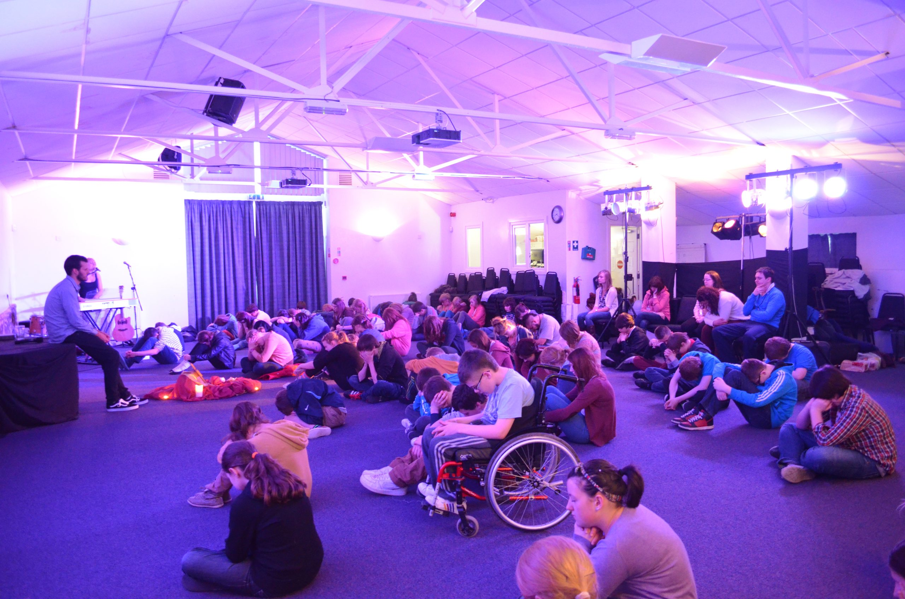

Join the Diocesan Lourdes Pilgrimage as part of the youth section — a week of service and community you genuinely never forget.
Each year young people from across the diocese travel to Lourdes to serve as youth helpers on the Diocesan Pilgrimage. You'll support assisted pilgrims, join a full week of liturgies and socials, and be part of something far bigger than yourself.
First-timers and returning helpers are both welcome. You don't need any experience — just a willingness to serve and to be changed by the week.
Fill this in to register your interest — we'll send the info booklet and next steps. Under-18s will need parent/carer consent, which we'll arrange with you.